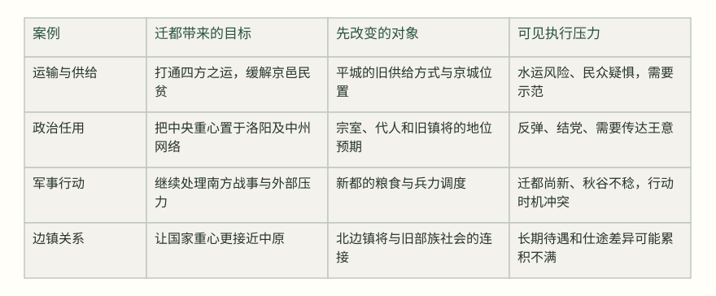
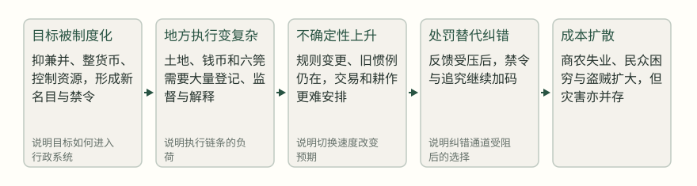
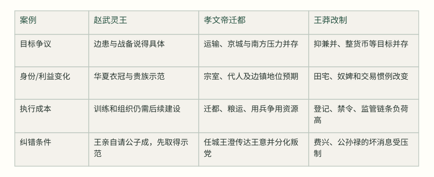

赵武灵王宣布要让赵人穿胡服、学骑射时，一道阻力来自一位称病不朝的老贵族。公子成并没有先论证骑射在军事上绝无用处，他说的是另一件事：华夏的衣冠、礼乐和旧制本身就是国家秩序的一部分；突然换成远方服饰，等于“变古之道，逆人之心”。这场争论把改革的难处暴露得很清楚：支持改变目标，不等于愿意承担改变身份、关系和操作规则的费用。[1]
“改革的代价”因此不能只写成守旧者保护私利、改革者追求公共利益的故事。一个旧办法可能确实失灵，也可能仍承担着协调、识别和分配的功能；一个新办法可能方向合理，却在切换期制造新的风险。本文选择三个相隔很远的案例，不是为了给改革排出成败榜，而是把四个问题分开：大家是否同意要解决什么问题？谁的身份和资源先被改变？执行系统有没有能力把原则变成稳定操作？变化的速度是否给了人们调整和纠错的机会？
一、赵武灵王：目标相近，身份先付账
赵国面对的是一个具体而不轻松的安全环境。赵武灵王北略中山后，与肥义商量胡服骑射；《通鉴》写下他的判断：“虽驱世以笑我，胡地、中山，吾必有之！”这里的目标不是抽象地崇尚异俗，而是让军队适应北方地形和邻国压力，并为扩张与防守建立相应的机动能力。[2]
国人皆不欲，公子成称疾不朝。
《通鉴》正文，卷3前307年条 · [3]
公子成的反对有两个层次。第一层是规范判断：衣冠礼乐是“中国”之所以为中国的可见标志，王若舍弃它，恐怕损害远方对赵国的认知，也损害国内上下的秩序。第二层是决策风险：如果只是为了追随远方而变服，改革就像用象征动作替代军事实效。史料没有说公子成暗中谋利，也没有说他完全否认边防困难；他是在提醒，改革不能把“新”本身当成理由。[3]
赵王的回应也没有停在“我有权命令”。他重新列出赵国周围的齐、中山、燕、东胡、楼烦、秦、韩，又提起中山曾侵赵、围鄗，说明自己为什么把服制与战备放在一起。这个回应把争论从“穿什么才正统”移到“旧的作战方式能否应付已发生的威胁”。但它也没有消除所有成本：胡服令仍先触碰贵族的身体、礼仪和公开身份，越靠近王室的人，越需要在众目睽睽下表明是否接受。[3]
胡服骑射的切换顺序：从安全目标到贵族示范

这一步顺序很重要。赵王没有先把公子成的异议当作敌我之分，而是亲自去请；公子成接受后，次日穿胡服上朝，胡服令才正式发布。它未必意味着赵王放慢了军事改革，反而是把最可见的身份成本集中到一个能被全体看见的示范节点上。改变服装、训练骑射、重组军队当然不是同一件事；但在这里，先让最高贵族公开承受象征性损失，减少了普通人独自承担“背离旧制”的风险。这个解释是从记载顺序重建出来的策略，不是史料明说的王者计划。
这也解释了为什么不能简单归纳成“改革要强力推进”。赵王手里有清晰的外部压力、一个能被公开检验的军事目标，以及足以令关键贵族改变态度的政治位置。若目标不清、承担代价的人不在决策链内，单纯复制“先命令、后解释”很可能只会加深不信任。赵国案例的贡献，正在于把目标争论与身份成本分开：公子成未必是旧利益的代言人，他指出的是改革若不能说明用途，就会先损耗共同秩序。
二、迁都洛阳：搬一座城，实际上搬动了什么？
北魏孝文帝迁都的难处，比更换服装复杂得多。平城不仅是一个地名，也是北魏长期经营北边、安排宗室和镇将的政治空间。洛阳则靠近中原行政与运输网络。孝文帝在一次南行中解释迁都的现实理由：平城没有漕运之路，京邑民贫；迁都洛阳，是为了沟通四方运输。他甚至要亲自走一段被臣下认为水势凶险的路线，以打开百姓对水运的疑惧。[4]
我以平城无漕运之路，故京邑民贫。今迁都洛阳，欲通四方之运，而民犹惮河流之险；故朕有此行，所以开百姓之心也。
魏主所言／《通鉴》正文，卷140后495年条 · [4]
这个理由说明迁都不只是文化选择：运输、京城供给和南方战线都是可见约束。但“有现实理由”不等于“所有参与者都能立即适应”。迁都还改变了谁在中央附近、谁掌握升迁机会、哪些旧关系仍有价值。公元496年，穆泰与宗室、代人结谋，记载把即时反弹写得很直白：孝文帝南迁后，亲任者多为中州儒士，宗室及代人往往不乐；穆泰由定州转恒州后，联合多人谋乱。[5]
这里可以确认两件事，不能多推一步。可以确认，迁都后的身份与任用变化成为部分宗室和代人的不满背景；不能据此确认每个反对者都只是在保住私利，也不能把这场反叛直接写成后来六镇之乱的充分原因。有人可能担忧政治边缘化，有人可能不信任新的人事网络，也有人只是借“恋旧”结党。记载提供的是行动和公开背景，而不是每个人完整的动机。[5]
中央处理这场危机的方式，也显示执行成本不等于是否有决心。孝文帝派有病在身的任城王澄北行，先判断叛党强弱；澄没有立即调动大军，而是根据穆泰没有据城、反而迎接阳平王，判断其势弱，随后让李焕单骑入代，说明王意，晓谕利害。叛党最终未能得到更多支持。史料能支持“信息传递与速度帮助平息局面”，不能证明说服本身是唯一原因；王权、兵力和叛党内部的犹疑同样在场。[6]
迁都的执行压力还体现在改革与其他国家事务互相争夺资源。孝文帝准备南征时，李冲提醒迁都尚新、秋谷不熟，不宜马上兴师；皇帝却认为外患不能久置，要求群臣尽说所见。[7] 这不是“改革派忽视成本”的简单例子：皇帝面对的是迁都、新粮、南敌同时存在的窗口；如果等待，可能错过军事机会；如果立即行动，又可能让尚未稳定的新中心承受过大负担。改革的代价有时不是某一项政策的账，而是同一批人力、粮食和注意力被多项任务争用。
迁都的四种成本：同一决定牵动不同系统


后来的边镇危机让这个问题更尖锐。广阳王深追述平城旧镇的待遇、京镇仕途差异、边镇被轻视和援军迅速返回等问题，称“边人见此援师，遂自意轻中国”，并警告诸镇可能相继出事。[8] 这是有价值的制度性反证：迁都之后，国家中心与北边之间的距离、仕途和资源关系确实值得追问。但它出现在危机已经发展之时，又带有上书求变的目的；它能说明长期张力，不能单独证明迁都造成全部结果。这是一项待解释的结构张力，不是本篇已经证明的单一因果链。
公元497年，史料仍记朝臣变衣冠，而宗室耆旧丕独穿胡服，皇帝没有强迫他立即修饰仪容，只是诱示大理。[9] 这一小处很能说明改革的速度问题：政治中心已经迁动，服制也在变，但最高统治者仍会对某些象征性抵抗保留缓冲。若把每个“不齐”都视为必须当天消灭的敌意，改革可能节省一段解释时间，却把身份损失转化为公开对抗。
三、王莽：目标越多，规则越快，反馈越远
王莽改制的危险，不在于所有目标都毫无道理。前汉末年，限制兼并、减轻贫弱、整顿货币和控制重要资源，均有长期争论。早在汉哀帝时，董仲舒、师丹等人的议论就把名田、奴婢与贫富差距放在一起；限田方案却因贵戚近习不便而搁置。[10] 这段材料提醒我们，目标共识和执行共识不是一回事：许多人可以承认兼并有问题，却未必同意自己先交出田宅、奴婢或既有交易方式。
王莽称天下田为“王田”、奴婢为“私属”，禁止买卖，并要求把超过规定的田分给九族、邻里和乡党。[11] 这是一套试图重塑产权与社会关系的方案，不只是调整税率。它把“谁拥有、谁可以转让、谁有资格获得”同时改写，因此执行者必须掌握全国土地与人口信息，也必须面对地方豪强、宗族和普通家庭对不确定性的反应。史料明确记下制度命令，却没有证明它在各地均被完整执行；文章不能把法令文本直接当成社会现实。
货币改革更直接地暴露了切换速度的成本。王莽一次推出金、银、龟、贝、钱、布等五物六名二十八品，随后因百姓不便而只保留大小钱并行；旧五铢钱仍被人们视为便利，新的钱制又数次变更，百姓“不信”。为了迫使新钱流通，朝廷限制出入、重罚私铸，甚至把携带旧钱和议论大钱将废联系到惩罚。[12] 这里的核心不是“货币品种多所以失败”这么简单，而是交换需要稳定预期；从这些记载看，本文推断当官方不断改变单位、面值和禁令时，商人和农民可能会把下一次变更的风险计入今天的交易。
王莽改制中的反馈回路：理念如何变成执行压力


六筦把执行问题进一步推向地方。记载说，负责五均、六筦的人员多由富商充任，乘传求利，与郡县互相勾结，甚至张空簿；随后法令繁苛、徭役增加，旱蝗相继，贫者无以自存，盗贼渐多。[13] 这条叙述同时包含制度弊病和外部冲击：富商兼任监管者造成利益冲突，官吏借禁令侵刻小民；旱灾、蝗灾与饥馑又让任何新税、新禁令的负担变重。可以说改制加重了脆弱处境，不能说它单独制造了全部灾难。
更关键的是，反馈并没有顺畅回到决策者。荆州牧费兴把盗贼与税山泽、旱灾、饥穷联系起来，提出借牛种、放宽租赋；王莽却因此免他的官。[14] 后来公孙禄批评井田使人弃业、六筦使工商困穷，并说“下情不上通”；王莽发怒，虽迁鲁匡以应民怨，仍没有由此建立稳定的修正机制。[15] 这不能证明每一项批评都正确，却能说明一个治理风险：当报告坏消息的代价高于顺旨的收益，最高决策者听到的就会越来越像政策的回声。
王莽的案例也保留了一个容易被忽略的反面：改革并不是一开始就没有支持者。抑制兼并、限制奴婢交易、稳定货币，可能得到部分士人和受压群体的认同；问题在于目标被同时铺开，制度细则频繁变化，处罚扩张却没有同等可靠的核验和退出办法。一个支持目标的人，完全可能反对某项执行规则；一个因新规受损的人，也未必是在为不公制度辩护。把这些差异压扁成“改革对保守”的二分，会错过政策为什么在具体环节失灵。
四、比较：先问争议在哪一层，再问代价由谁承担
三案放在一起，最明显的差别不是改革者胆量大小，而是改革所面对的约束不同。赵武灵王有清楚的边患和可观察的军事目标，先处理关键贵族的身份成本；孝文帝的迁都同时改变运输、任用和边镇关系，必须在新都尚未稳定时应对军事事务；王莽把多个长期目标一并推进，却让规则、货币和监管人员不断变动，最后以处罚弥补信息不足。[3] [4] [7] [12]
判断改革阻力的四个问题


因此，面对一项改革，第一步不是先问“支持还是反对”，而是把争议定位。有人反对的是目标，例如认为边患并不值得改军制；有人同意目标，却担忧身份与信任被一夜改写；有人赞成方向，却担心粮食、人员和信息系统承受不了；还有人发现问题后仍不敢报告，因为纠错会被解释为不忠。四种争议需要不同处理，不能用同一把“强力推进”的尺子。
第二步是查代价的时间顺序。赵王先让公子成穿胡服，说明象征成本可以通过公开示范分担；孝文帝既解释漕运，又必须面对迁都后的人事和边镇压力，说明基础设施收益可能很远，而身份损失立刻发生；王莽则先改变名称、规则和货币，交易者立刻面对不确定性，政策收益却需要长期才能出现。改革者若只计算最终收益，会低估第一批承受者为何犹豫。
第三步是保留退出和修正的空间。赵国的记载显示，王可以亲自说明理由，也可以用贵族示范把命令变成可观察的行为；北魏的记载显示，平叛并非只能调重兵，传达王意、判断对方强弱也是执行的一部分；王莽的材料则提供反面提醒：当坏消息被惩罚、规则不断改变，系统会把“没有人反对”误读成“政策没有问题”。核查和等待当然会损失时间，缓冲也可能错过窗口，但没有反馈的快，常常只是更快地扩大错误。
最后要承认，改革的方向本身也可能需要争论。赵武灵王的边患判断并不自动证明所有胡化措施都有益；迁都洛阳的运输理由不自动证明其后所有边镇问题都由迁都造成；王莽抑兼并和整货币的愿望，也不自动证明具体禁令合理。历史给我们的不是“改革总要坚持”或“旧制不可触碰”的口号，而是一种更慢、却更可靠的观察：目标是否明确，身份与资源的第一笔账谁来付，执行系统能否承受，坏消息能否回来，改变速度是否留有纠错余地。改革真正的代价，往往就在这些问题被省略之后才开始显形。[2] [8] [13]
来源与证据范围
- 卷3 · 公元前307年条 · 本年段落4（正文 · 阅读原文）
国人皆不欲，公子成称疾不朝。
支持：胡服令最初遭到普遍反对，公子成以称疾不朝回应。
限制：只记载行动，不足以说明每个反对者的具体动机。 - 卷3 · 公元前307年条 · 本年段落3（正文 · 阅读原文）
与肥义谋胡服骑射以教百姓，曰：“愚者所笑，贤者察焉。虽驱世以笑我，胡地、中山，吾必有之！”遂胡服。
支持：赵武灵王将胡服骑射与取得胡地、中山的安全和扩张目标相连。
限制：此处不记载后续军事成效，不能用来证明改革的全部结果。 - 卷3 · 公元前307年条 · 本年段落4（正文 · 阅读原文）
臣闻中国者，圣贤之所教也，礼乐之所用也，远方之所观赴也，蛮夷之所则效也。今王舍此而袭远方之服，变古之道，逆人之心
支持：公子成以礼乐、华夏身份和人心反对变服；赵王随后列举四境与中山围鄗。
限制：这是公子成与赵王的言论记录，分别证明他们说了什么，不自动证明双方全部判断正确。 - 卷140 · 公元495年条 · 本年段落21（正文 · 阅读原文）
我以平城无漕运之路，故京邑民贫。今迁都洛阳，欲通四方之运，而民犹惮河流之险；故朕有此行，所以开百姓之心也。
支持：孝文帝说明迁都与漕运、京邑供给及说服民众有关。
限制：是迁都理由与行动的记载，不能据此证明迁都之后全面改善供给。 - 卷140 · 公元496年条 · 本年段落28（正文 · 阅读原文）
及帝南迁洛阳，所亲任者多中州儒士，宗室及代人往往不乐。
支持：迁都后任用网络和宗室、代人感受发生变化，成为穆泰结谋背景。
限制：“往往不乐”是史家概括，不能把所有反对者动机简化为利益自保。 - 卷140 · 公元496年条 · 本年段落30（正文 · 阅读原文）
先遣治书侍御史李焕单骑入代，出其王意，晓论泰党，示以祸福，皆莫为之用。
支持：任城王澄通过快速传达王意和分化支持者处理穆泰叛乱。
限制：结果还受到兵力、叛党规模和内部关系影响，不能将传达视为唯一原因。 - 卷140 · 公元496年条 · 本年段落31（正文 · 阅读原文）
今卜筮虽吉而人事未备，迁都尚新，秋谷不稔，未可以兴师旅。
支持：迁都尚新、粮食不丰与军事行动之间存在资源和时机冲突。
限制：李冲提出的是劝谏，不等于客观上唯一正确的军政方案。 - 卷150 · 公元524年条 · 本年段落15（正文 · 阅读原文）
自定鼎伊、洛，边任益轻，唯底滞凡才，乃出为镇将，转相模习，专事聚敛。
支持：广阳王深追述伊洛定鼎后边镇地位、仕途和治理恶化的感受。
限制：为524年危机中的上书，属后见性、劝谏性陈述，不能单独证明迁都导致六镇之乱。 - 卷141 · 公元497年条 · 本年段落11（正文 · 阅读原文）
初，魏主迁都，变易旧俗，并州刺史新兴公丕皆所不乐；帝以其宗室耆旧，亦不之逼，但诱示大理
支持：迁都和变俗持续引发宗室耆旧不满，孝文帝对丕采取渐进劝导。
限制：该段记于迁都之后，不能据此概括所有宗室态度。 - 卷33 · 公元前7年条 · 本年段落20（正文 · 阅读原文）
时田宅、奴婢贾为减贱，贵戚近习皆不便也，诏书且须后，遂寝不行。
支持：西汉限田限奴婢方案因贵戚近习不便而搁置，显示目标与执行共识不同。
限制：这是前汉方案，作为制度争论背景，不应直接归因于王莽后来政策。 - 卷37 · 公元9年条 · 本年段落15（正文 · 阅读原文）
今更名天下田曰『王田』，奴婢曰『私属』，皆不得卖买。
支持：王莽王田、私属制度试图改变土地和奴婢的买卖规则。
限制：法令文本不等于各地实际执行，也不能证明实际分田完成。 - 卷37 · 公元10年条 · 本年段落17（正文 · 阅读原文）
百姓溃乱，其货不行。莽知民愁，乃但行小钱直一与大钱五十，二品并行；龟、贝、布属且寝。
支持：宝货制度造成流通困难并被迫调整，反复变更削弱对新币的信任。
限制：段落同时涉及强制流通与私铸，不能把货币问题归结为单一技术因素。 - 卷38 · 公元17年条 · 本年段落3（正文 · 阅读原文）
法令烦苛，民摇手触禁，不得耕桑，繇役烦剧，而枯旱、蝗虫相因
支持：六筦执行、繁苛法令、徭役与旱蝗同时出现，推动贫困与盗贼扩大。
限制：原文并列制度和自然灾害，不能把所有灾害与盗贼全部归因于改制。 - 卷38 · 公元18年条 · 本年段落2（正文 · 阅读原文）
间者国张六筦，税山泽，妨夺民之利，连年久旱，百姓饥穷，故为盗贼。
支持：费兴把税山泽、旱灾和饥穷视为荆扬盗贼的重要背景，并提出宽租借种。
限制：这是费兴向王莽提出的地方判断，首先证明其说法，不等于完整因果证明。 - 卷38 · 公元21年条 · 本年段落12（正文 · 阅读原文）
说符侯崔发，阿谀取容，令下情不上通
支持：公孙禄批评朝廷中存在迎合与下情不通，并同时批评井田、六筦和对匈奴用兵。
限制：公孙禄的批评带有争论立场；王莽部分采纳，不代表各项指控均获证实。